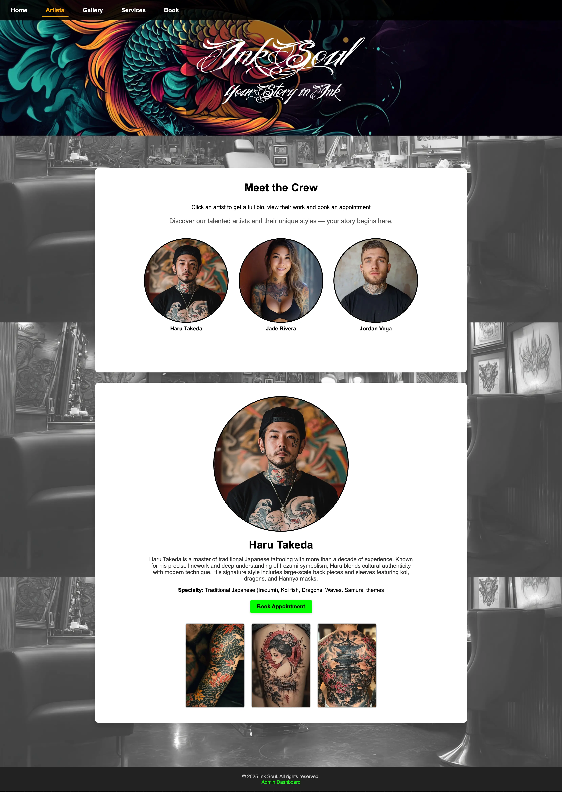
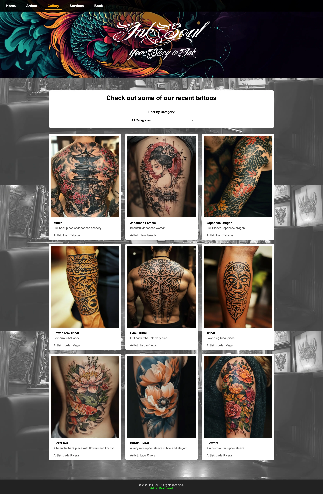
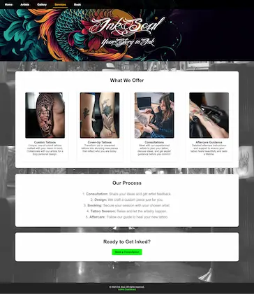
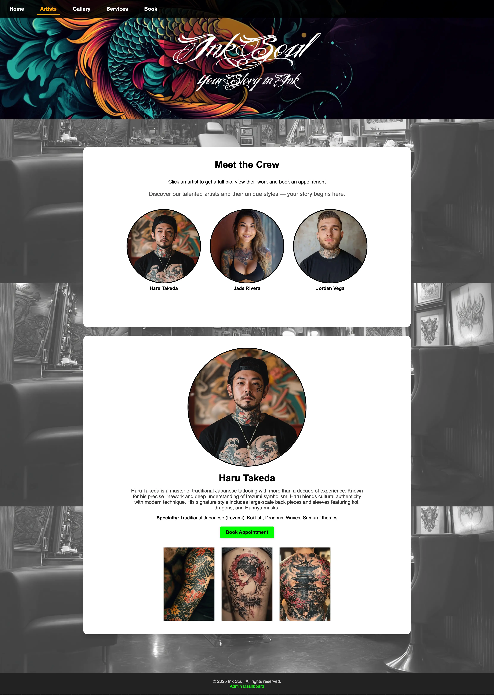
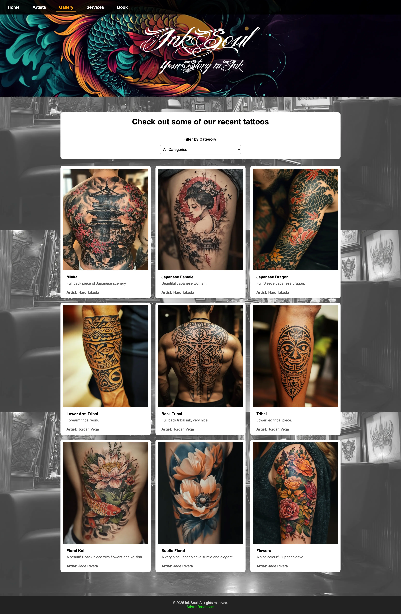
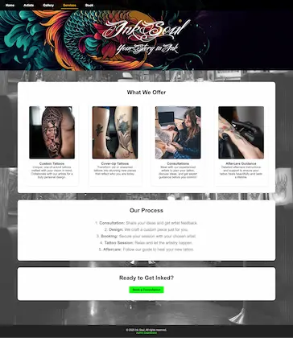

InkSoul
Tattoo & Piercing Studio Management System
A capstone full-stack web application built as part of my Mobile & Web Development diploma, designed to manage a tattoo and piercing studio with bookings, artist profiles, galleries, and an admin dashboard.
The Problem
Many small studios rely on social media messages and manual processes to manage bookings, artists, and galleries, which leads to disorganization, missed messages, and inefficient workflows.
The Goal
Build a complete studio management system that allows clients to browse work and request bookings, while giving administrators full control over artists, galleries, and appointments from a secure dashboard.
The Solution
I designed and built InkSoul as a full-stack PHP & MySQL application with a public-facing website and a secure admin dashboard. The system uses a relational database to manage artists, galleries, and appointments, and includes role-based admin tools for content management, image uploads, and booking workflows. All changes made in the admin panel are reflected instantly on the live site.
System Architecture Overview
InkSoul is built as a full-stack web system composed of a public-facing website, a secure admin dashboard, and a shared MySQL database. The admin dashboard is used to manage all artists, gallery images, and appointments, while the public site dynamically displays the same data in real time.
- Public Website: Displays artists, galleries, services, and studio information to visitors
- Admin Dashboard: Secure backend used to manage content, images, artists, and appointments
- MySQL Database: Central data store for all studio content and booking information
- Image Storage: Handles uploaded gallery and artist images used across the site
All content updates made through the admin dashboard are instantly reflected on the live public website through the shared database, creating a centralized and consistent content management workflow.
Application Screens
Tap or click any image to view it full size.
 





Key Features
- Public Website – Showcases artists, services, and studio portfolio
- Gallery System – Categorized tattoo images with artist attribution
- Artist Profiles – Individual pages with bios and work
- Booking Requests – Clients can request appointments through forms
- Admin Dashboard – Manage artists, gallery images, and appointments
- Real-Time Updates – All admin changes instantly reflect on the site
Technical Highlights
- Full CRUD system for artists, gallery items, and appointments
- Admin authentication system
- Dynamic filtering and category management
- Image upload and storage handling
- Separation of public site and admin dashboard
Technologies Used
- PHP
- MySQL
- HTML, CSS, JavaScript
What I Learned
- Designing and building a real full-stack web application
- Database schema design and relational data management
- Authentication and admin control systems
- Building reusable CRUD interfaces
- Managing file uploads and content systems
View the project on GitHub: InkSoul Repository